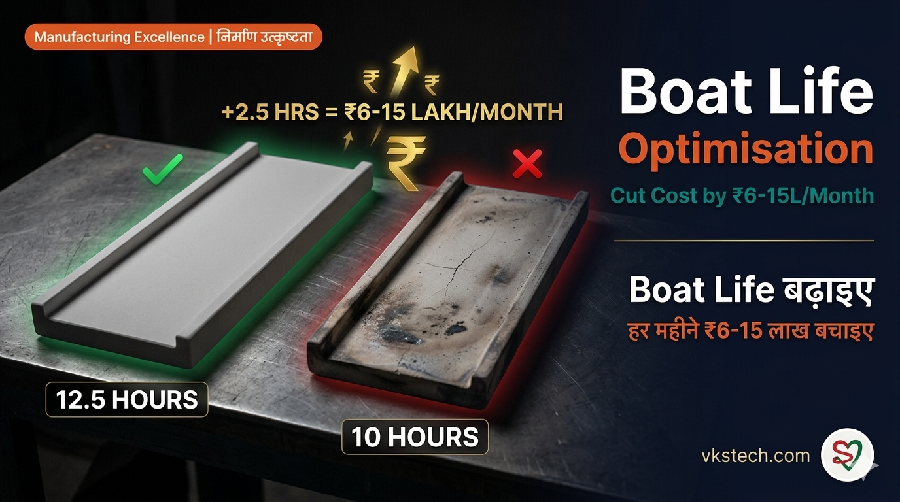
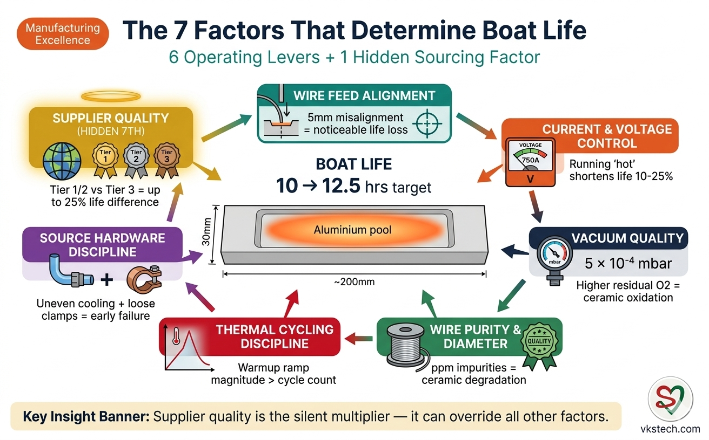
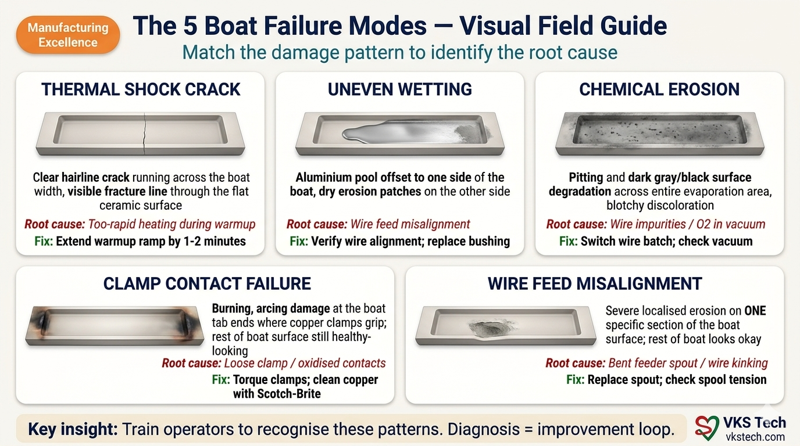
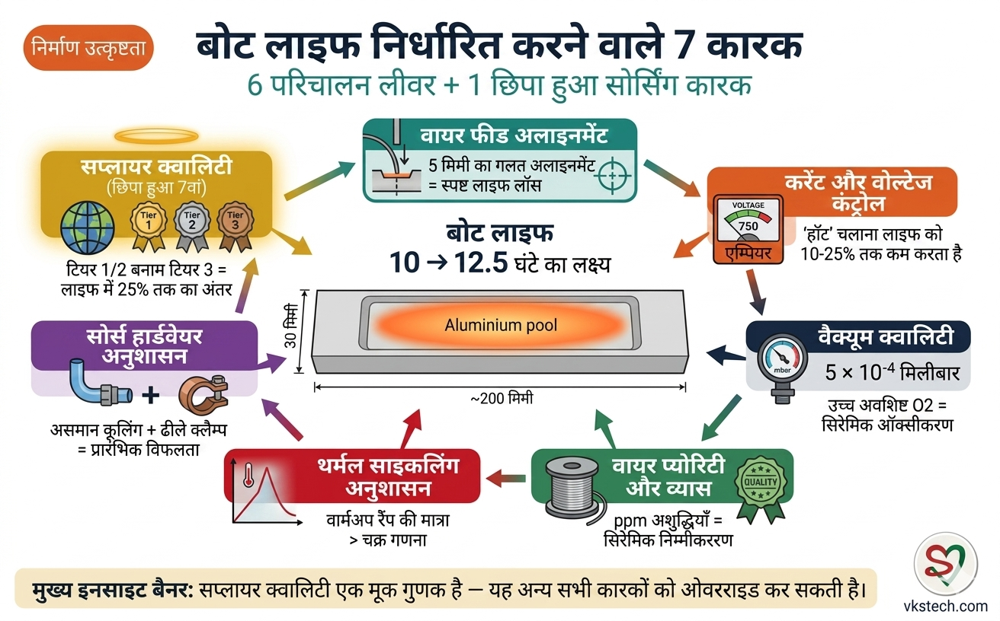
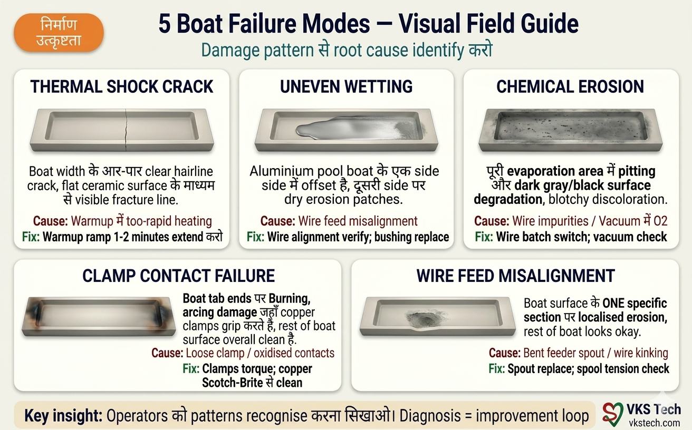

🚢 Boat Life Optimisation — Cut Boat Cost by ₹6 to ₹15 Lakh/Month
📖 17-min read | Deep Technical Guide | Bookmark for reference
Walk into any Indian metalliser plant and ask the production manager what their monthly boat consumption looks like. They will tell you a number, then shrug: "It is what it is." Boats are seen as an unavoidable consumable. Burn them, replace them, repeat. The plant runs at 10 hours of useful life per boat, and that is just how things are.
This blog tears down that assumption. Real plant data shows that with disciplined operating practices, the same boats can be pushed to 12.5 hours of useful life — a 25% improvement that translates into ₹6 to ₹15 lakh of monthly savings depending on plant size. For a typical 2-metalliser flexible packaging plant, that is enough to fund two junior maintenance engineers for an entire year.
Most online content on TiB2-BN evaporation boats quotes lab-ideal numbers like 100+ hours per boat. Walk any Indian shop floor and reality is starkly different — boats burn in 10 hours, sometimes less. This blog uses the honest numbers, the real economics, and the operational levers that actually move the needle in Indian flexible packaging conditions.
- Baseline boat life: 10 hours of evaporation time (typical Indian plants)
- Achievable target: 12.5 hours (+25% improvement, no capex required)
- Monthly savings: ₹6 to ₹15 lakh by plant size and configuration
- Framework: 7 factors + 5 failure modes + 90-day improvement programme
📊 The 10-Hour Reality — Why It Matters
A typical Indian metalliser running OD 2.2 PET film at 800 metres per minute consumes one full set of TiB2-BN ceramic boats in roughly 10 hours of pure evaporation time. That number is not a guess — it is the consistent operating reality across most plants in India running standard equipment with standard maintenance.
To put 10 hours in context with cycle math from the 1,440-Minute Analysis: a metalliser running 12 production cycles per day spends 67 minutes × 12 = 804 minutes (13.4 hours) in active running each day. At 10 hours of boat life, this means roughly 1.34 boat sets are consumed every single day. Not every week. Every day. A 2-metalliser plant burns through roughly 2.7 boat sets daily — that is 26 to 50 boats consumed per metalliser depending on machine width.
Multiply that by 30 days, by ₹1,150 per boat (the most economical Tier-3 sourcing pricing in the Indian market), and by a typical 2-metalliser plant configuration. The number that emerges is uncomfortable: a standard plant is spending around ₹24 lakh per month on consumable boats alone, before counting any other operating costs.
⚙️ Plant Configuration Matters — The Width Factor
Boat consumption scales with metalliser width. Wider machines need more boats per set, and high-speed machines need denser boat spacing. Here is the configuration matrix that drives all subsequent math:
| Metalliser Width | Standard Speed (95mm spacing) | High Speed (72mm spacing) |
|---|---|---|
| 2,450 mm | 26 boats/set | 34 boats/set |
| 3,000 mm | 32 boats/set | 42 boats/set |
| 3,650 mm | 38 boats/set | 50 boats/set |
Most Indian flexible packaging plants run 2,450mm to 3,650mm metallisers. The smallest typical configuration burns 26 boats per set, the largest burns 50. This 2× difference in boats-per-set directly drives the 2× difference in monthly savings potential. A plant operator looking at this blog should first identify their machine configuration, then apply the math accordingly.
💰 The Real Economics — Two Performance Bands
Rather than overcomplicate with 4 or 5 bands, let us use the cleanest possible framework: Standard plants achieving 10-hour boat life, versus Improved plants achieving 12.5-hour boat life through disciplined maintenance and operating practices. This 25% improvement is realistic. Going beyond 12.5 hours requires equipment upgrades or premium boat sourcing, which is a different conversation.
Here is the monthly cost impact for both bands, calculated at ₹1,150 per boat (Tier-3 Chinese economy pricing) and assuming 30 production days per month with 13.4 hours of running per day:
| Plant Configuration | Standard (10h boat life) Monthly Cost | Improved (12.5h) Monthly Cost | Monthly Savings |
|---|---|---|---|
| Single 2,450mm standard (26 boats/set) | ₹11.96 lakh | ₹9.57 lakh | ₹2.4 lakh |
| 2 × 2,450mm plant (52 boats/cycle total) | ₹23.92 lakh | ₹19.14 lakh | ₹4.8 lakh |
| Single 3,650mm high-speed (50 boats/set) | ₹23 lakh | ₹18.4 lakh | ₹4.6 lakh |
| 2 × 3,650mm high-speed plant | ₹46 lakh | ₹36.8 lakh | ₹9.2 lakh |
| 3 × 3,650mm high-speed plant (large) | ₹69 lakh | ₹55.2 lakh | ₹13.8 lakh |
The headline range "₹6 to ₹15 lakh per month" reflects this reality. A typical 2-metalliser flexible packaging plant lands in the ₹4-9 lakh band; larger plants with 3 high-speed metallisers can reach the ₹13-15 lakh upper end. If your plant uses Tier-1 imported boats (₹1,800-2,500/boat) or Tier-2 Indian-manufactured boats (₹1,400-1,800/boat), scale these numbers up by 25-115% accordingly.

🔧 The 6 Operating Factors That Determine Boat Life
Boat life is not random. It is the cumulative product of six operating factors plus one sourcing factor (covered separately below). Each factor can be measured, controlled, and optimised. Here are the six operating levers in order of impact:
Factor 1: Wire Feed Alignment. The aluminium wire must feed precisely to the centre of each boat's depression. Misalignment by even 5mm causes uneven heating, hot spots, and premature cracking. Most plants check wire alignment monthly; best plants check daily and adjust as needed. Plants with poor wire alignment lose noticeable boat life — sometimes 1-2 hours per cycle in extreme cases.
Factor 2: Boat Current and Voltage Control. Operating boats at 800 amps when they could deliver the same OD at 750 amps shortens life noticeably — running "hot" is a false economy. The mistake plants make is cranking up current to compensate for low OD readings, when the real problem is wire feed rate or wire purity. Calibrate your inline OD sensors monthly, set a current ceiling per recipe, and resist the urge to push past it.
Factor 3: Vacuum Quality. Operating at 8 × 10⁻⁴ mbar versus 5 × 10⁻⁴ mbar may sound like a minor difference, but residual oxygen at higher pressures causes boat surface oxidation and reduces life noticeably. Pump health, chamber leak rates, and O-ring discipline directly impact boat economics. Refer to Daily PM Checklist for the maintenance items that protect vacuum quality.
Factor 4: Aluminium Wire Purity and Diameter. Wire impurities — even at parts-per-million levels — react with boat ceramic and accelerate degradation. Wire diameter variation causes uneven feed and uneven evaporation. Source wire from suppliers who provide certificates of analysis, and reject batches that vary more than 2% from spec.
Factor 5: Thermal Cycling Discipline. One thermal cycle equals one production cycle, where the boat heats up from cold during warmup, holds at evaporation temperature during running, and cools down during vent. With a 10-hour boat life and 67-minute running time per cycle, each boat goes through roughly 9 thermal cycles before failure.
Each cycle subjects the ceramic to a thermal swing from ambient (~30°C) to evaporation temperature (>1,400°C) and back. The magnitude of shock per cycle matters more than the count — reducing the daily cycle count does not buy you significantly more boat life if the per-cycle shock remains aggressive.
Plants that ramp boat current too aggressively (target evap temp in 8-10 minutes) cause hairline cracks within the first few cycles. Plants with disciplined ramp profiles (target evap temp in 15-18 minutes) extend boat life noticeably. The fix is in your warmup recipe, not in cycle scheduling.
Factor 6: Source Hardware Discipline (Cooling + Clamps). This is the factor most online boat-life literature completely ignores, yet it is one of the most common root causes of premature failure observed on Indian shop floors. Two specific hardware conditions silently destroy boats:
6a — Uneven cooling of the evaporation source section: The source assembly has water cooling lines that must remove heat uniformly across all boat positions between cycles. When cooling is asymmetric (one side cooler than the other due to scaling, partial flow blockage, or air pocket in the line), boats on the warmer side start the next cycle from a higher base temperature. This means a steeper effective thermal swing during warmup, accelerating ceramic fatigue. Symptom: boats in specific positions consistently fail earlier than boats in other positions.
6b — Poor copper clamp contact: Each boat is held at both ends by copper clamps that deliver electrical current. When clamp bolts loosen over time, or when contact surfaces oxidise (black carbon deposits, surface degradation), electrical resistance increases at that contact point. Higher resistance creates a localised hot spot at the clamp end of the boat, which then propagates as a thermal stress crack. Worse, asymmetric clamp condition (one end tight + clean, other end loose + oxidised) causes the boat to heat unevenly. Symptom: burning marks visible at one boat tab end, while the other end looks healthy.
The fix for both is procedural, not capital-intensive: verify cooling line flow uniformity weekly using simple temperature probes at each source section position, and torque + Scotch-Brite clean copper clamps during every boat changeover (per VKS-MET-SOP-08 Copper Clamp Replacement). Plants that institutionalise this practice see boat life improve by 15-25% within three months without any other change. This is among the highest-ROI improvements available — zero capex, pure discipline.
🏭 Supplier Quality — The Hidden 7th Factor
This is the factor that supplier brochures will never tell you, and the one that overrides everything else: boat supplier quality matters more than any operational discipline. A premium-grade boat run on a poorly maintained machine will outlast an economy boat run on a perfectly maintained machine. The ceramic composition, manufacturing tolerances, and grain structure of TiB2-BN composites vary dramatically across suppliers.
The Indian market sees boats from three distinct supplier tiers, each with different price-life trade-offs:
Tier 1 — Premium Imports (German/US): Plansee (Austria/Germany), Kennametal (USA, T-Vap series), and Elmet Technologies (formerly H.C. Starck). These boats cost ₹1,800-2,500 each and deliver toward the upper end of the 10-12.5 hour life range under standard Indian operating conditions. The premium pricing buys tighter ceramic uniformity, better thermal shock resistance, and lower batch-to-batch variation. Best suited for plants where boat life consistency matters more than per-unit cost.
Tier 2 — Indian Manufacturers: Plansee India (Mysuru — same parent company as Tier 1 Plansee), Supervac Industries (Delhi-based, India's largest TiB2-BN producer with strong technical support), and Okosu Ceratech. These boats cost ₹1,400-1,800 each and deliver 10-12 hours of life. Best balance of cost, life, and after-sales technical support for typical Indian flexible packaging operations.
Tier 3 — Chinese Economy: Wuxi Special Ceramic Electric, Shandong Pengcheng (PENSC), and UNIPRETEC (Xiamen). These boats cost ₹1,150-1,500 each and deliver 9-11 hours of life. The lower price point makes them attractive, but plants must accept slightly more variability and shorter average life. Some Indian plants find their batch quality has improved significantly over the past 3-5 years, though qualification is still recommended.
Here is the trap most plants fall into: they switch to Tier-3 suppliers to save 25-50% on boat cost, then their boat life drops 10-20%, and the actual savings shrink or disappear. Worse, downtime increases because boat changes happen more often. Run the math for your plant before switching suppliers — sometimes the cheaper boat is the more expensive choice.
The most disciplined plants procure from Tier-1 or Tier-2 suppliers as their baseline, qualify Tier-3 suppliers through a structured 90-day trial program tracking life and consistency, and only switch when Tier-3 demonstrates within 10% of baseline life. This evidence-based sourcing decision is worth ₹50,000-2 lakh per month in avoided false economy.

🔬 The 5 Failure Modes — How to Diagnose Boat End-of-Life
When a boat fails, the failure pattern tells you which operating factor caused it. Train your operators to recognise these five patterns and you have a diagnostic feedback loop that drives improvement:
Failure Mode 1 — Thermal Shock Crack: A clean fracture line running across the boat width, usually appearing within the first 3 hours. Root cause is too-rapid heating during boat warmup. Fix: extend warmup ramp by 1-2 minutes.
Failure Mode 2 — Uneven Wetting: The aluminium pool is offset to one side of the boat depression, with the other side showing dry spots and surface erosion. Root cause is wire feed misalignment. Fix: verify wire alignment, replace wire feeder bushing if worn.
Failure Mode 3 — Chemical Erosion: Pitting and surface degradation across the entire evaporation area, often with a black or grey discoloration. Root cause is aluminium wire impurities or excessive vacuum residual oxygen. Fix: switch wire batch, check vacuum quality.
Failure Mode 4 — Clamp Contact Failure: Burning or arcing visible at the boat tab ends where copper clamps grip. Root cause is loose clamp pressure or oxidised contact surfaces. Fix: torque clamp bolts to spec, clean copper surfaces with Scotch-Brite during every boat change. Refer to VKS-MET-SOP-08 Copper Clamp Replacement.
Failure Mode 5 — Wire Feed Misalignment: Severe localised erosion on one specific section of the boat depression while the rest of the boat looks healthy. Root cause is bent wire feeder spout or wire kinking. Fix: replace feeder spout, check wire spool tension.
📋 The 90-Day Improvement Programme
Knowing the framework is one thing; implementing it is another. Here is a structured 90-day programme that takes a typical plant from 10-hour boat life to 12.5-hour boat life:
Days 1-30 (Baseline Establishment): Track every single boat replacement using a structured daily log. Capture these mandatory data points for each boat-set change:
- Boat ID + supplier batch number (traceability)
- Install date/time and removal date/time (calculate evaporation hours)
- Length metallised on this boat-set (metres) — this is the real productivity KPI; hours can lie if idle time is counted, metres-metallised cannot
- Photograph each removed boat on a clean white surface with good lighting (a smartphone is sufficient) — store in a shared folder organised by date and machine
- Failure mode classified per the 5-mode framework above
- Position on source assembly (which clamp slot the boat occupied) — this exposes hardware-specific failure patterns
- Operator name who performed the changeover
The photo log becomes your most powerful diagnostic tool. After 30 days, lay all photos side-by-side and patterns emerge that no spreadsheet can show — boats from position 5 always cracked at the left clamp end, or boats from supplier batch X all show the same erosion pattern. This visual evidence drives root cause analysis far better than text notes alone.
Days 31-60 (Targeted Fixes): Identify your top 2 failure modes from the baseline data. Apply targeted fixes — wire alignment SOP for Modes 2 and 5, vacuum quality discipline for Mode 3, and source hardware audit (cooling line uniformity check + clamp torque + Scotch-Brite cleaning) for Modes 1 and 4. Track boat life weekly to see whether the fixes are working.
Days 61-90 (Stabilisation): Lock in the new SOPs as standard practice. Continue tracking boat life. By end of day 90, you should see boat life trending toward 12 hours consistently. The remaining 0.5-hour improvement to 12.5 hours often requires either an upgrade to Tier-1 or Tier-2 suppliers, or specific equipment fixes that need engineering investment.
Plants that complete this programme rigorously typically save the equivalent of 6-10 weeks of project effort within the first 90 days through reduced boat consumption alone. The math is straightforward: a ₹4-9 lakh monthly savings, recurring forever, more than covers the cost of dedicated tracking and SOP discipline.
🔬 Common Engineer Questions
"My plant claims 15-hour boat life. Is that real?" Possible but rare. Either you are running an unusually well-maintained plant with Tier-1 boats, or the measurement methodology is loose (counting partial cycles as full life, for example). Run a 30-day rigorous tracking exercise to confirm. Most plants that claim 15 hours actually run 11-12 hours when measured precisely.
"Can we reach 20-hour boat life?" Theoretically possible with premium Tier-1 boats, perfect operating discipline, and equipment upgrades. Not realistic for typical Indian plants. Focus on the 10-to-12.5 hour improvement first; revisit beyond 12.5 only after stabilising.
"Is it worth switching from Tier-3 to Tier-1 or Tier-2 boats?" Run the math for your specific plant. If you are at 9-10 hour boat life on Tier-3 (Chinese economy), switching to Tier-1 or Tier-2 may push you to 11-12 hour life. The cost increase (₹1,150 → ₹1,800) is 56%; the life increase (10 → 12) is 20%. Net economics often favour Tier-1/2 for high-volume plants because the avoided downtime and supply consistency benefits compound. Test with a 90-day trial before committing.
"What about boat life in AlOx production?" AlOx production is harder on boats due to oxygen plasma exposure. Expect 60-70% of standard PET boat life. Budget accordingly and plan more frequent changes. Refer to VKS-MET-WI-14 AlOx Metallisation for the specific operating parameters.
"How does boat change time impact boat life?" Indirectly. Longer boat changes mean more thermal cycling per boat (because each restart subjects the new boats to additional thermal stress). The SMED for Metallisers blog covers how to compress changeover from 40 to 20 minutes — that compression also reduces thermal cycling and helps boat life by 5-10%.
If your team has questions not covered above, the answers are almost always in the daily log and photo archive. That is exactly why the 90-day tracking programme matters — it converts vague intuitions into specific, defensible answers about your plant.
If you take only one thing away from this blog, let it be this: boat consumption is not destiny. The numbers below summarise the path from baseline to disciplined plant.
🚢 Boat Life Optimisation — हर महीने ₹6 से ₹15 लाख Boat Cost बचाएँ
📖 18-min read | Deep Technical Guide | Reference के लिए bookmark करें
किसी भी Indian metalliser plant में जाइए और production manager से पूछिए कि उनकी monthly boat consumption कितनी है। वो आपको एक number बताएँगे, फिर shrug करेंगे: "जो है सो है।" Boats को unavoidable consumable माना जाता है। जलाओ, replace करो, repeat। Plant 10 hours useful life per boat पर चलता है, और बस यही reality है।
ये blog उस assumption को तोड़ता है। Real plant data दिखाता है कि disciplined operating practices के साथ, वही boats 12.5 hours तक pushed जा सकते हैं — एक 25% improvement जो plant size के हिसाब से ₹6 से ₹15 लाख monthly savings में translate होती है। Typical 2-metalliser flexible packaging plant के लिए, ये दो junior maintenance engineers की पूरे साल की salary fund करने के लिए काफी है।
TiB2-BN evaporation boats पर ज़्यादातर online content lab-ideal numbers जैसे 100+ hours per boat quote करता है। किसी भी Indian shop floor पर चलिए और reality starkly different है — boats 10 hours में जलते हैं, कभी-कभी कम। ये blog honest numbers, real economics, और वो operational levers use करता है जो actually Indian flexible packaging conditions में needle move करते हैं।
- Baseline boat life: 10 hours evaporation time (typical Indian plants)
- Achievable target: 12.5 hours (+25% improvement, बिना capex के)
- Monthly savings: Plant size और configuration के हिसाब से ₹6 से ₹15 लाख
- Framework: 7 factors + 5 failure modes + 90-day improvement programme
📊 10-Hour Reality — ये क्यों Matter करती है
OD 2.2 PET film पर 800 metres per minute चलने वाला typical Indian metalliser roughly 10 hours pure evaporation time में TiB2-BN ceramic boats का एक full set consume करता है। ये number guess नहीं है — ये standard equipment और standard maintenance के साथ चलने वाले India के ज़्यादातर plants की consistent operating reality है।
1,440-Minute Analysis की cycle math के context में 10 hours को रखें: 12 production cycles per day चलाने वाला metalliser हर दिन 67 minutes × 12 = 804 minutes (13.4 hours) active running में spend करता है। 10 hours boat life पर, इसका मतलब हर single दिन roughly 1.34 boat sets consume होते हैं। हर हफ़्ते नहीं। हर दिन। 2-metalliser plant roughly 2.7 boat sets daily जलाता है — यानी machine width के हिसाब से 26 से 50 boats per metalliser consume होते हैं।
उसे 30 days से, ₹1,150 per boat से (Indian market में सबसे economical Tier-3 sourcing pricing), और typical 2-metalliser plant configuration से multiply करें। जो number निकलता है वो uncomfortable है: standard plant महीने में लगभग ₹24 लाख सिर्फ़ consumable boats पर spend कर रहा है, बाक़ी operating costs counting करने से पहले।
⚙️ Plant Configuration Matters — Width Factor
Boat consumption metalliser width के साथ scale होती है। Wider machines को per set ज़्यादा boats चाहिए, और high-speed machines को denser boat spacing चाहिए। यहाँ है configuration matrix जो आगे की सारी math drive करती है:
| Metalliser Width | Standard Speed (95mm spacing) | High Speed (72mm spacing) |
|---|---|---|
| 2,450 mm | 26 boats/set | 34 boats/set |
| 3,000 mm | 32 boats/set | 42 boats/set |
| 3,650 mm | 38 boats/set | 50 boats/set |
ज़्यादातर Indian flexible packaging plants 2,450mm से 3,650mm metallisers चलाते हैं। सबसे छोटी typical configuration 26 boats per set जलाती है, सबसे बड़ी 50 जलाती है। Boats-per-set में ये 2× difference directly monthly savings potential में 2× difference drive करता है। इस blog को देखने वाले plant operator को पहले अपनी machine configuration identify करनी चाहिए, फिर उसी हिसाब से math apply करनी चाहिए।
💰 Real Economics — दो Performance Bands
4 या 5 bands से overcomplicate करने के बजाय, सबसे clean framework use करते हैं: 10-hour boat life achieve करने वाले Standard plants, बनाम disciplined maintenance और operating practices से 12.5-hour boat life achieve करने वाले Improved plants। ये 25% improvement realistic है। 12.5 hours से आगे जाने के लिए equipment upgrades या premium boat sourcing चाहिए, जो अलग conversation है।
दोनों bands के लिए monthly cost impact, ₹1,150 per boat (Tier-3 Chinese economy pricing) पर calculate, 30 production days per month और 13.4 hours running per day assume करते हुए:
| Plant Configuration | Standard (10h boat life) Monthly Cost | Improved (12.5h) Monthly Cost | Monthly Savings |
|---|---|---|---|
| Single 2,450mm standard (26 boats/set) | ₹11.96 लाख | ₹9.57 लाख | ₹2.4 लाख |
| 2 × 2,450mm plant (52 boats/cycle total) | ₹23.92 लाख | ₹19.14 लाख | ₹4.8 लाख |
| Single 3,650mm high-speed (50 boats/set) | ₹23 लाख | ₹18.4 लाख | ₹4.6 लाख |
| 2 × 3,650mm high-speed plant | ₹46 लाख | ₹36.8 लाख | ₹9.2 लाख |
| 3 × 3,650mm high-speed plant (large) | ₹69 लाख | ₹55.2 लाख | ₹13.8 लाख |
Headline range "₹6 to ₹15 lakh per month" इसी reality को reflect करता है। Typical 2-metalliser flexible packaging plant ₹4-9 lakh band में आता है; 3 high-speed metallisers वाले larger plants ₹13-15 lakh upper end तक पहुँच सकते हैं। अगर आपका plant Tier-1 imported boats (₹1,800-2,500/boat) या Tier-2 Indian-manufactured boats (₹1,400-1,800/boat) use करता है, इन numbers को तदनुसार 25-115% scale up करें।

🔧 Boat Life तय करने वाले 6 Operating Factors
Boat life random नहीं है। ये छह operating factors plus एक sourcing factor (नीचे अलग cover किया गया) का cumulative product है। हर factor measure, control, और optimise किया जा सकता है। Impact के order में छह operating levers यहाँ हैं:
Factor 1: Wire Feed Alignment. Aluminium wire को precisely हर boat के depression के centre में feed होनी चाहिए। 5mm की भी misalignment uneven heating, hot spots, और premature cracking का कारण बनती है। ज़्यादातर plants wire alignment monthly check करते हैं; best plants daily check और adjust करते हैं। खराब wire alignment वाले plants noticeable boat life खोते हैं — extreme cases में कभी-कभी per cycle 1-2 hours तक।
Factor 2: Boat Current और Voltage Control. Boats को 800 amps पर चलाना जब वो same OD 750 amps पर deliver कर सकते हैं, life को noticeably कम करता है — "hot" चलाना false economy है। Plants ये mistake करते हैं — low OD readings compensate करने के लिए current बढ़ाते हैं, जब real problem wire feed rate या wire purity है। Inline OD sensors monthly calibrate करें, हर recipe के लिए current ceiling set करें, और उससे आगे push करने का urge resist करें।
Factor 3: Vacuum Quality. 5 × 10⁻⁴ mbar के बजाय 8 × 10⁻⁴ mbar पर operate करना minor difference लग सकता है, पर higher pressures पर residual oxygen boat surface oxidation cause करती है और life noticeably कम करती है। Pump health, chamber leak rates, और O-ring discipline directly boat economics impact करते हैं। Vacuum quality protect करने वाले maintenance items के लिए Daily PM Checklist देखें।
Factor 4: Aluminium Wire Purity और Diameter. Wire impurities — parts-per-million levels पर भी — boat ceramic के साथ react करती हैं और degradation accelerate करती हैं। Wire diameter variation uneven feed और uneven evaporation cause करती है। Certificates of analysis देने वाले suppliers से wire source करें, और spec से 2% से ज़्यादा vary करने वाले batches reject करें।
Factor 5: Thermal Cycling Discipline. एक thermal cycle का मतलब एक production cycle है, जहाँ boat warmup में cold से heat होता है, running phase में evaporation temperature पर hold होता है, और vent में cool होता है। 10-hour boat life और 67-minute running time per cycle के साथ, हर boat failure से पहले roughly 9 thermal cycles से गुज़रता है।
हर cycle ceramic को ambient (~30°C) से evaporation temperature (>1,400°C) तक और वापस thermal swing subject करती है। Per cycle shock का magnitude count से ज़्यादा matter करता है — daily cycle count कम करने से significantly ज़्यादा boat life नहीं मिलती अगर per-cycle shock aggressive ही रहे।
Boat current बहुत aggressively ramp करने वाले plants (8-10 minutes में evap temp target करते हुए) पहले कुछ cycles में hairline cracks cause करते हैं। Disciplined ramp profiles वाले plants (15-18 minutes में evap temp target करते हुए) boat life noticeably extend करते हैं। Fix आपके warmup recipe में है, cycle scheduling में नहीं।
Factor 6: Source Hardware Discipline (Cooling + Clamps). ये वो factor है जिसे ज़्यादातर online boat-life literature पूरी तरह ignore करता है, फिर भी ये Indian shop floors पर premature failure का सबसे common root cause है। दो specific hardware conditions silently boats को नष्ट करती हैं:
6a — Evaporation source section की uneven cooling: Source assembly में water cooling lines हैं जो cycles के बीच सभी boat positions पर uniformly heat remove करनी चाहिए। जब cooling asymmetric होती है (एक side दूसरी से कम cool — scaling, partial flow blockage, या line में air pocket के कारण), warmer side के boats next cycle higher base temperature से शुरू करते हैं। इसका मतलब warmup में steeper effective thermal swing, ceramic fatigue accelerate करता है। Symptom: specific positions के boats consistently other positions के boats से जल्दी fail होते हैं।
6b — Poor copper clamp contact: हर boat को दोनों ends पर copper clamps hold करते हैं जो electrical current deliver करते हैं। जब clamp bolts time के साथ loose हो जाते हैं, या जब contact surfaces oxidise होती हैं (black carbon deposits, surface degradation), उस contact point पर electrical resistance बढ़ जाती है। Higher resistance boat के clamp end पर एक localised hot spot बनाती है, जो फिर thermal stress crack के रूप में propagate होती है। बदतर, asymmetric clamp condition (एक end tight + clean, दूसरा loose + oxidised) boat को unevenly heat करती है। Symptom: एक boat tab end पर burning marks visible, जबकि दूसरा end healthy दिखता है।
दोनों का fix procedural है, capital-intensive नहीं: हर source section position पर simple temperature probes use करके cooling line flow uniformity weekly verify करें, और हर boat changeover पर copper clamps torque + Scotch-Brite clean करें (VKS-MET-SOP-08 Copper Clamp Replacement के अनुसार)। जो plants इस practice को institutionalise करते हैं, वो तीन months के अंदर बिना किसी और change के boat life में 15-25% improvement देखते हैं। ये सबसे ज़्यादा ROI improvements में से एक है — zero capex, pure discipline।
🏭 Supplier Quality — Hidden 7th Factor
ये वो factor है जो supplier brochures आपको कभी नहीं बताएँगे, और जो बाक़ी सब चीज़ों पर override करता है: boat supplier quality किसी भी operational discipline से ज़्यादा matter करती है। Premium-grade boat poorly maintained machine पर परfectly maintained machine पर चलने वाले economy boat से ज़्यादा चलेगा। TiB2-BN composites की ceramic composition, manufacturing tolerances, और grain structure suppliers में dramatically vary करती है।
Indian market में तीन distinct supplier tiers से boats आते हैं, हर tier का अपना price-life trade-off है:
Tier 1 — Premium Imports (German/US): Plansee (Austria/Germany), Kennametal (USA, T-Vap series), और Elmet Technologies (पहले H.C. Starck)। ये boats ₹1,800-2,500 per piece cost करते हैं और standard Indian operating conditions में 10-12.5 hour life range के upper end तक deliver करते हैं। Premium pricing tighter ceramic uniformity, better thermal shock resistance, और lower batch-to-batch variation buy करती है। उन plants के लिए best जहाँ boat life consistency per-unit cost से ज़्यादा matter करती है।
Tier 2 — Indian Manufacturers: Plansee India (Mysuru — same parent company जैसे Tier 1 Plansee), Supervac Industries (Delhi-based, India का सबसे बड़ा TiB2-BN producer strong technical support के साथ), और Okosu Ceratech। ये boats ₹1,400-1,800 per piece cost करते हैं और 10-12 hours life deliver करते हैं। Typical Indian flexible packaging operations के लिए cost, life, और after-sales technical support का best balance।
Tier 3 — Chinese Economy: Wuxi Special Ceramic Electric, Shandong Pengcheng (PENSC), और UNIPRETEC (Xiamen)। ये boats ₹1,150-1,500 per piece cost करते हैं और 9-11 hours life deliver करते हैं। Lower price point इन्हें attractive बनाता है, पर plants को slightly ज़्यादा variability और shorter average life accept करनी पड़ती है। कुछ Indian plants पाते हैं कि उनकी batch quality पिछले 3-5 years में significantly improve हुई है, हालाँकि qualification अब भी recommended है।
यहाँ trap है जिसमें ज़्यादातर plants फँसते हैं: वो Tier-3 suppliers पर switch करते हैं boat cost पर 25-50% बचाने के लिए, फिर उनकी boat life 10-20% drop होती है, और actual savings shrink या ग़ायब हो जाती हैं। बदतर, downtime बढ़ता है क्योंकि boat changes ज़्यादा बार होते हैं। Suppliers switch करने से पहले अपने plant के लिए math run करें — कभी-कभी सस्ता boat ज़्यादा महँगा choice होता है।
सबसे disciplined plants Tier-1 या Tier-2 suppliers से baseline procurement करते हैं, structured 90-day trial program से Tier-3 suppliers qualify करते हैं जो life और consistency track करता है, और सिर्फ़ तब switch करते हैं जब Tier-3 baseline life के 10% within demonstrate करता है। ये evidence-based sourcing decision avoided false economy में ₹50,000-2 lakh per month worth है।

🔬 5 Failure Modes — Boat End-of-Life कैसे Diagnose करें
जब boat fail होती है, failure pattern बताता है कि कौन सा operating factor cause था। अपने operators को ये पाँच patterns recognise करने की training दीजिए और आपके पास एक diagnostic feedback loop है जो improvement drive करता है:
Failure Mode 1 — Thermal Shock Crack: Boat width के across एक clean fracture line, usually पहले 3 hours में दिखती है। Root cause boat warmup के दौरान too-rapid heating है। Fix: warmup ramp को 1-2 minutes extend करें।
Failure Mode 2 — Uneven Wetting: Aluminium pool boat depression के एक side पर offset है, दूसरी side dry spots और surface erosion दिखाती है। Root cause wire feed misalignment है। Fix: wire alignment verify करें, worn होने पर wire feeder bushing replace करें।
Failure Mode 3 — Chemical Erosion: पूरे evaporation area में pitting और surface degradation, अक्सर black या grey discoloration के साथ। Root cause aluminium wire impurities या excessive vacuum residual oxygen है। Fix: wire batch switch करें, vacuum quality check करें।
Failure Mode 4 — Clamp Contact Failure: Boat tab ends पर burning या arcing visible जहाँ copper clamps grip करते हैं। Root cause loose clamp pressure या oxidised contact surfaces है। Fix: clamp bolts spec पर torque करें, हर boat change पर copper surfaces Scotch-Brite से clean करें। VKS-MET-SOP-08 Copper Clamp Replacement देखें।
Failure Mode 5 — Wire Feed Misalignment: Boat depression के एक specific section पर severe localised erosion जबकि बाक़ी boat healthy दिखता है। Root cause bent wire feeder spout या wire kinking है। Fix: feeder spout replace करें, wire spool tension check करें।
📋 90-Day Improvement Programme
Framework जानना एक चीज़ है; implement करना दूसरी। यहाँ है structured 90-day programme जो typical plant को 10-hour boat life से 12.5-hour boat life तक ले जाता है:
Days 1-30 (Baseline Establishment): हर single boat replacement को structured daily log से track करें। हर boat-set change के लिए ये mandatory data points capture करें:
- Boat ID + supplier batch number (traceability के लिए)
- Install date/time और removal date/time (evaporation hours calculate करने के लिए)
- इस boat-set पर metallised length (metres) — ये real productivity KPI है; hours झूठ बोल सकते हैं अगर idle time count हो, metres-metallised नहीं बोल सकती
- हर removed boat की photograph clean white surface पर good lighting में (smartphone काफ़ी है) — date और machine के हिसाब से organised shared folder में store करें
- Failure mode ऊपर के 5-mode framework के अनुसार classify किया हुआ
- Source assembly पर position (boat किस clamp slot में था) — hardware-specific failure patterns expose करता है
- Operator name जिसने changeover perform किया
Photo log आपका सबसे powerful diagnostic tool बन जाता है। 30 days बाद सारी photos side-by-side रखें और patterns emerge होते हैं जो कोई spreadsheet नहीं दिखा सकता — position 5 के boats हमेशा left clamp end पर crack होते हैं, या supplier batch X के सारे boats same erosion pattern दिखाते हैं। ये visual evidence text notes अकेले से कहीं बेहतर root cause analysis drive करती है।
Days 31-60 (Targeted Fixes): Baseline data से अपने top 2 failure modes identify करें। Targeted fixes apply करें — Modes 2 और 5 के लिए wire alignment SOP, Mode 3 के लिए vacuum quality discipline, और Modes 1 और 4 के लिए source hardware audit (cooling line uniformity check + clamp torque + Scotch-Brite cleaning)। Boat life weekly track करें ये देखने के लिए कि fixes काम कर रही हैं या नहीं।
Days 61-90 (Stabilisation): नई SOPs को standard practice के रूप में lock करें। Boat life tracking continue करें। Day 90 के end तक, आपको boat life consistently 12 hours की तरफ़ trend करते हुए दिखनी चाहिए। 12.5 hours तक की remaining 0.5-hour improvement के लिए अक्सर या तो Tier-1 या Tier-2 suppliers पर upgrade, या specific equipment fixes चाहिए जिनमें engineering investment लगता है।
जो plants इस programme को rigorously complete करते हैं वो typically पहले 90 days में reduced boat consumption के through dedicated tracking और SOP discipline के 6-10 weeks of project effort का equivalent बचाते हैं। Math straightforward है: ₹4-9 lakh monthly savings, recurring forever, more than dedicated tracking और SOP discipline cost cover करती है।
🔬 Common Engineer Questions
"मेरा plant 15-hour boat life claim करता है। क्या ये real है?" Possible है पर rare। या तो आप unusually well-maintained plant Tier-1 boats के साथ चला रहे हैं, या measurement methodology loose है (partial cycles को full life count करना, उदाहरण के लिए)। Confirm करने के लिए 30-day rigorous tracking exercise run करें। ज़्यादातर plants जो 15 hours claim करते हैं actually 11-12 hours चलते हैं जब precisely measure होता है।
"क्या हम 20-hour boat life reach कर सकते हैं?" Premium Tier-1 boats, perfect operating discipline, और equipment upgrades के साथ theoretically possible है। Typical Indian plants के लिए realistic नहीं है। पहले 10-to-12.5 hour improvement पर focus करें; 12.5 से beyond को सिर्फ़ stabilising के बाद revisit करें।
"क्या Tier-3 से Tier-1 या Tier-2 boats पर switch करना worth है?" अपने specific plant के लिए math run करें। अगर आप Tier-3 (Chinese economy) पर 9-10 hour boat life पर हैं, Tier-1 या Tier-2 पर switch आपको 11-12 hour life तक push कर सकता है। Cost increase (₹1,150 → ₹1,800) 56% है; life increase (10 → 12) 20% है। Net economics अक्सर high-volume plants के लिए Tier-1/2 favour करती हैं क्योंकि avoided downtime और supply consistency benefits compound होते हैं। Commit करने से पहले 90-day trial से test करें।
"AlOx production में boat life का क्या?" AlOx production oxygen plasma exposure के कारण boats पर harder है। Standard PET boat life का 60-70% expect करें। तदनुसार budget करें और ज़्यादा frequent changes plan करें। Specific operating parameters के लिए VKS-MET-WI-14 AlOx Metallisation देखें।
"Boat change time boat life को कैसे impact करता है?" Indirectly। Longer boat changes का मतलब per boat ज़्यादा thermal cycling (क्योंकि हर restart नए boats को additional thermal stress subject करता है)। SMED for Metallisers blog cover करता है कि changeover को 40 से 20 minutes कैसे compress करें — वो compression thermal cycling भी reduce करती है और boat life में 5-10% help करती है।
अगर आपकी team के पास ऊपर cover नहीं हुए सवाल हैं, उन सबके जवाब लगभग हमेशा daily log और photo archive में हैं। यही reason है कि 90-day tracking programme matter करता है — ये vague intuitions को आपके plant के बारे में specific, defensible answers में convert करता है।